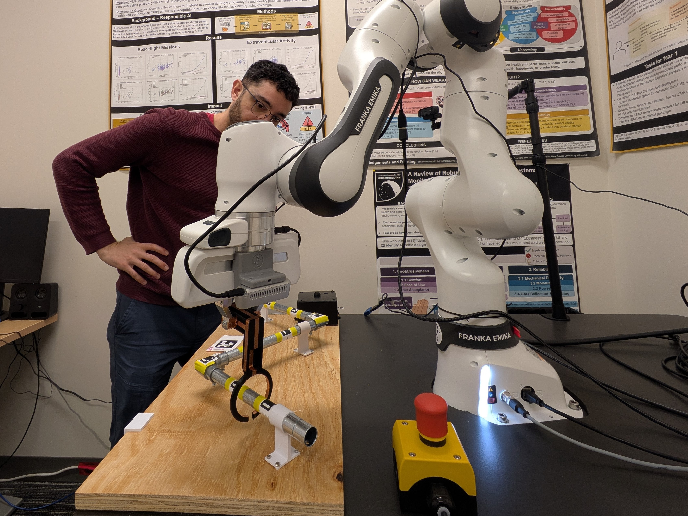
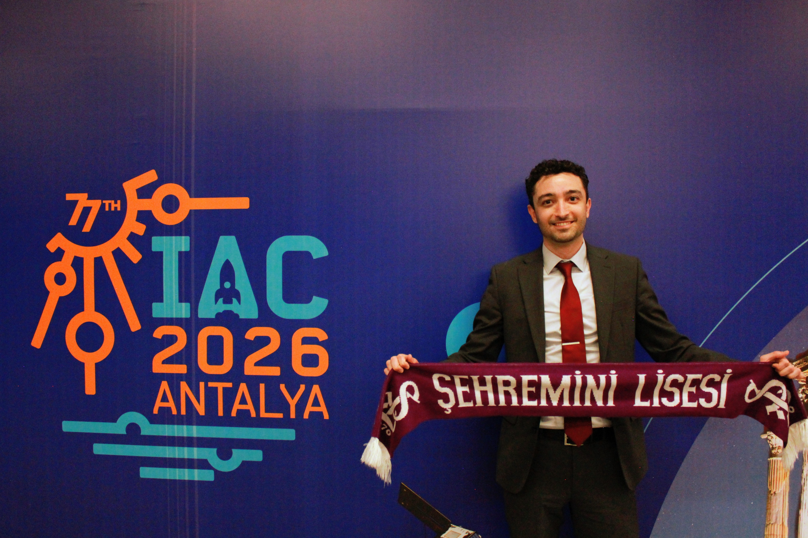
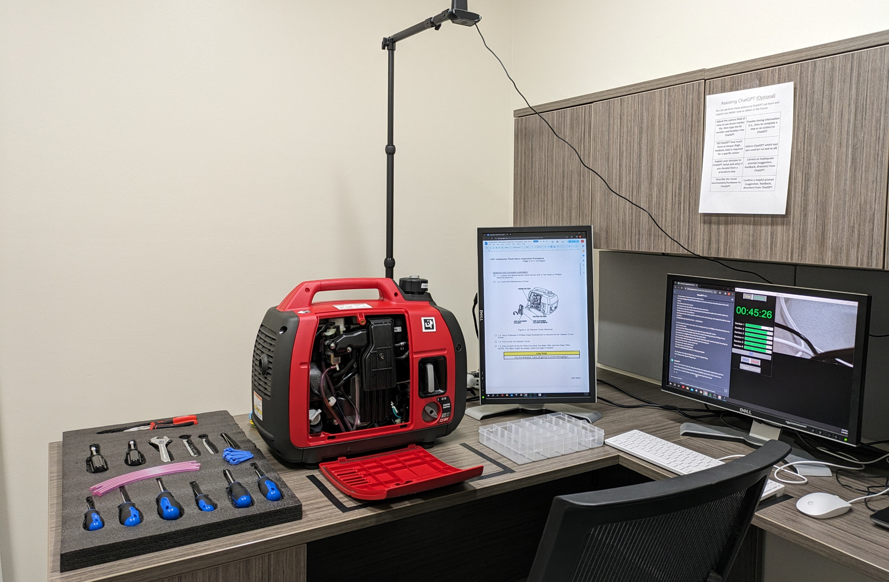
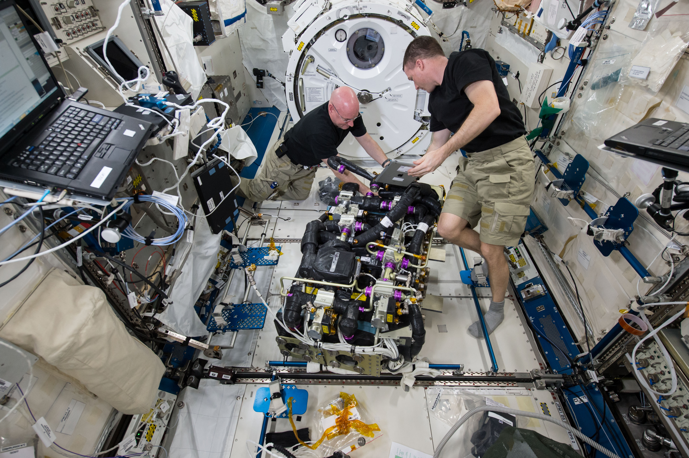
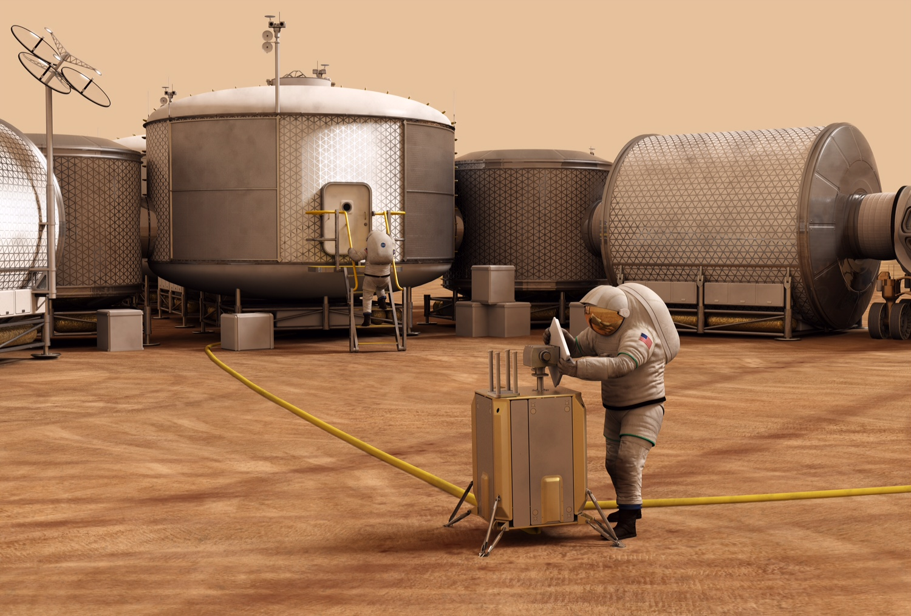
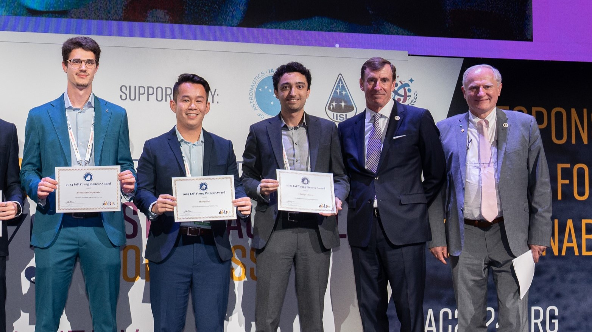

Human-Robot Interaction
Examining how astronauts may interact with robotic agents during simulated space habitat maintenance. Leading the effort from concept through execution.
View projectHuman factors engineer specializing in AI-enabled crew support.
Postdoctoral Associate • University of Colorado Boulder


Examining how astronauts may interact with robotic agents during simulated space habitat maintenance. Leading the effort from concept through execution.
View project
Studied how astronauts may interact with AI mission control agents during simulated space habitat maintenance. Led the study design and implementation.
View project
Image credit: NASASurveyed 10 former astronauts to characterize maintenance support between crews and mission control, informing a human-AI interaction framework for space operations. Led study design and data collection.
View project
Image credit: NASA
Image credit: IAF